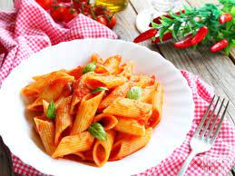

Penne al Pomodoro
Ingredienti
- Penne 500g
- Pomodori 800g
- Olio extravergine 2 cucchiai
- Aglio a spicchi
- Erbe aromatiche
Preparazione
- Mettere sul fuoco una pentola contenente acqua
- Fate soffriggere l'aglio con le erbe aromatiche
- Versate i pomodori nel soffritto
- Scolate la pasta e saltarla nella padella
- Servire il piatto